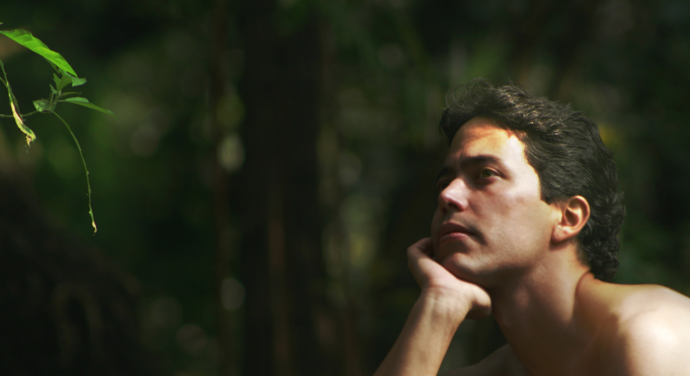

About Me

Architect with over 12 years of experience in design project, construction planning
and construction managing fields.
Problem solving oriented personality and so devoted to detail care. Curious by nature
about the scientific but also artistic context of my field. Now a days, the former has
led me to embark on the Programming World in order to expand my administration capabilities
by building remote distribuited and interface friendly environments our working teams can
interact from.
The attention to aesthetis and my passion for graphical arts, digital painting in
particular, forces me to always consider the expectator experience, which of course
I have as one of the main guide lines when designing information exchange formats for
managing processes. In other words, I always try to merge form and function when
building not just architerctural solutions, but also collaborative managing ones.
In this portfolio you will find detailed description of my work in relationship to
the different fields I have experience on. I thank you in advance for reviewing it.
Please visit my current workplace: 3a+c Taller de Arquitectura.